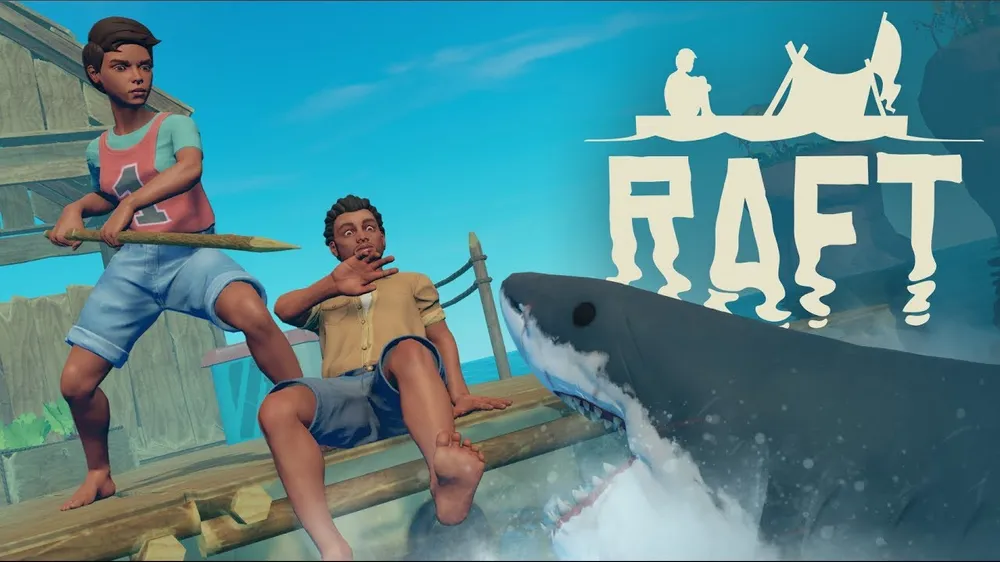

- Stardew Valley
- Don't Stave
- Raft
Raft를 소개합니다.

게임 바로가기
Raft는 'Redbeet Interactive'이라는 8인 재작팀이 만든 게임입니다.
2022.06.21에 정식 출시된 게임으로 생존, 어드벤처 장르입니다.
게임 줄거리
지구온난화로 인해 빙하가 녹아내린 후 구세계의 사람들과 작은 뗏목에서 살아가는 래프터들만이 남게 되었다. 래프터들은 아직 남은 육지에 희망을 찾아 '전방 정찰병(forward scouts)'를 자처하며 갈고리를 들고 바다에 나선다.
뗏목 위에 올라탄 채 망망대해를 표류하는 상황에서 생존하는 것을 목표로 한다. 해류에 떠내려오는 아이템들을 붙잡아서 생존에 필요한 도구들을 만들고 뗏목을 확장할 수 있다. 간간히 뗏목을 물어뜯으러 오는 상어를 쫓아내야 하는 것은 덤. 상황에 따라서 힐링게임이 될 수도 있고 노가다만 하게 될 수도 있다.